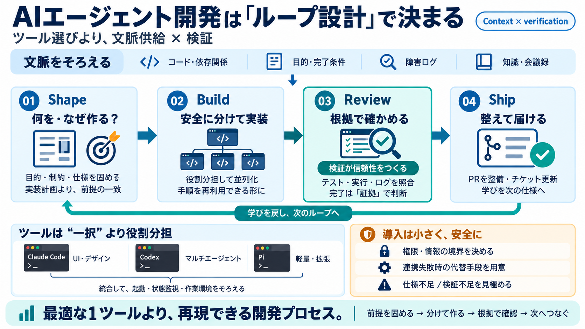

Herdr: Terminal Multiplexer with Built-in AI Agent State Awareness | Better Stack Community
Back to AI guides # Herdr: Terminal Multiplexer with Built-in AI Agent State Awareness Stanley Ulili Updated on June…

Back to AI guides # Herdr: Terminal Multiplexer with Built-in AI Agent State Awareness Stanley Ulili Updated on June…
A deep dive into two popular collections of AI agent 'skills' (markdown-based instruction files): Matt Pocock's skills r…
Sponsor Star 2 Your desk companion for agents, updates and everyday tools. macos agent webapp waveshare amoled menu…
setup-matt-pocock-skills: Configure this repo for the engineering skills (issue tracker, triage labels, domain doc layou…
summary of it. Skip this bullet where the directory does not exist. [...] More file actions ## Latest commit ## Histor…